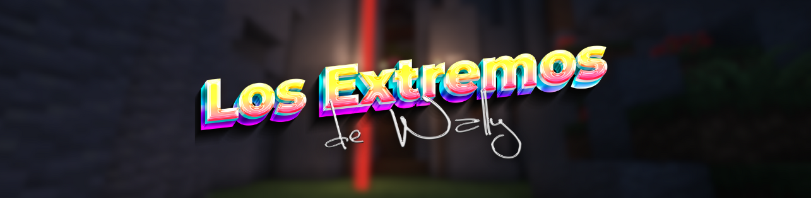

Dawn Of Walkers 2
Fecha: 26/10/2024 | Duración: 1 semana | Participantes: ≈ 25
Dawn Of Walkers 2 fue la precuela de Dawn Of Walkers. En DoW 2, los jugadores tomaban el papel de unos ciudadanos de una amurallada ciudad.
La ciudad, claramente inspirada en Attack On Titans, contenía 4 distritos idénticos, los cuales tenían una dificultad progresiva, siendo del A al D, según el distrito fuese más o menos díficil, los jugadores encontrarían mejores o peores recompensas. En el pasar de los días, se fueron abriendo los distritos, permitiendo a los jugadores equiparse con mejores herramientas, armas de fuego y armaduras. En el día final, se enfrentaron contra la entidad que controlaba a todos esos zombis, quedando los jugadores... ¿Victoriosos?
Dawn Of Walkers 2 introdujo muchas mecánicas desarrolladas por el equipo, entre ellas una IA mejorada, misiones diarias de todo tipo, y la introducción de los comandos de roleplay esenciales: /me, /do y /entorno.
